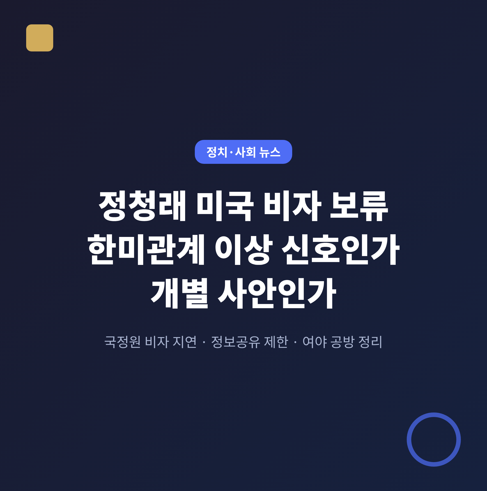
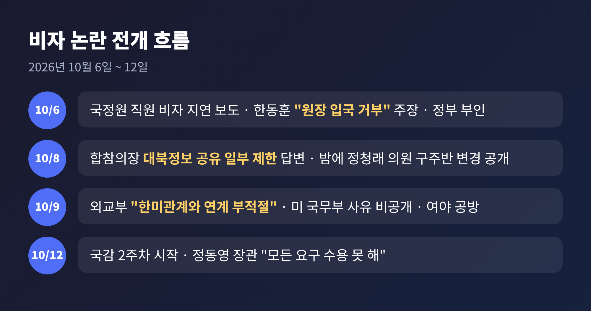
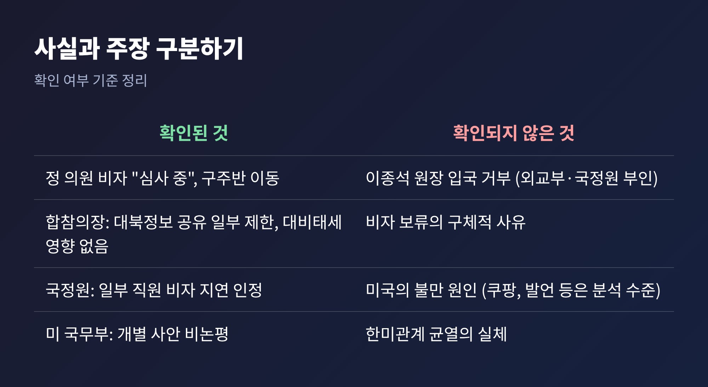
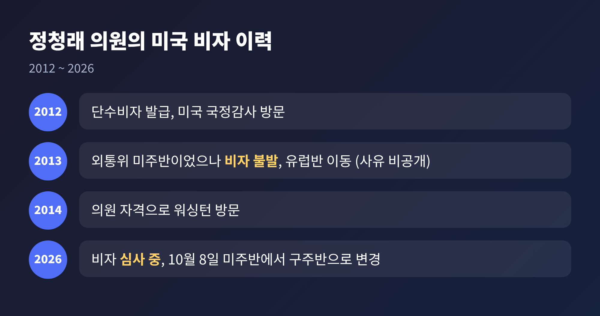
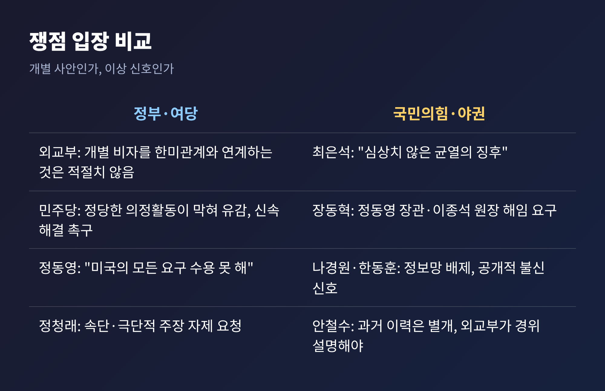
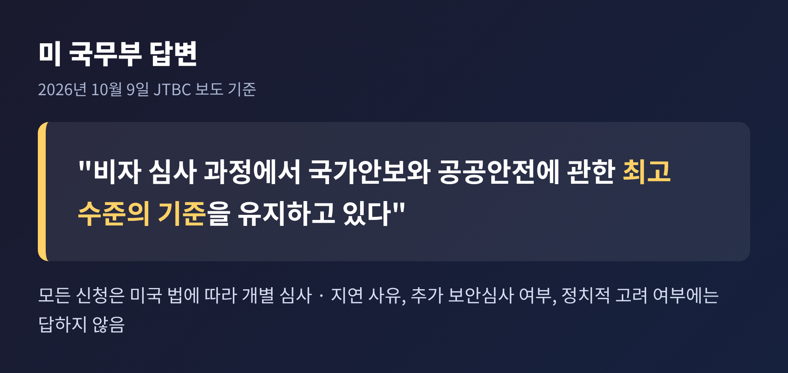
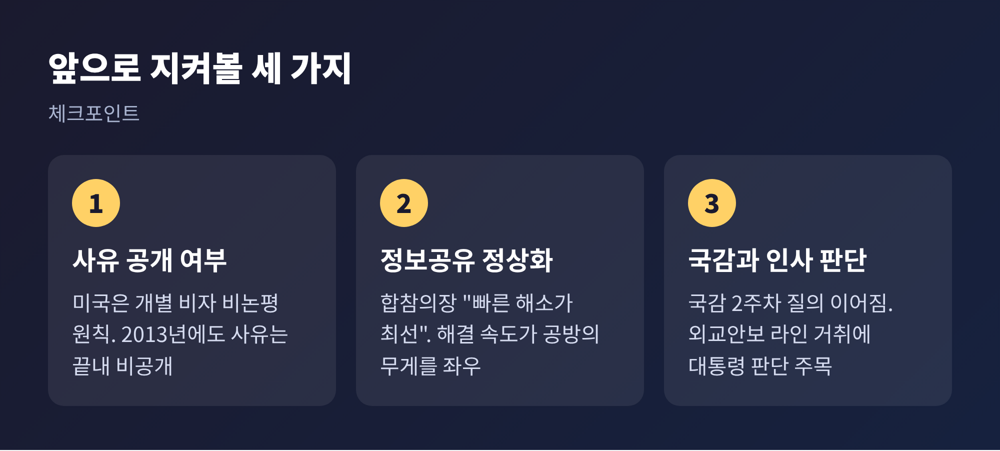

이번 글에서는 정청래 더불어민주당 의원의 미국 비자 보류가 어떻게 한미관계 공방으로 번졌는지 정리해 보겠습니다. 같은 주에 불거진 국정원 직원 비자 지연, 이종석 국정원장 방미 불발 주장, 대북정보 공유 제한 논란이 함께 얽혀 있습니다. 확인된 사실과 확인되지 않은 주장을 나눠서 살펴보겠습니다.
3줄 요약
1. 외교통일위 소속 정청래 의원은 미국 비자가 나오지 않아 미주반에서 구주반으로 옮겼고, 미 국무부는 사유를 밝히지 않았습니다.
2. 국민의힘은 국정원 직원 비자 지연 등과 묶어 "균열의 징후"라고 주장하고, 외교부는 "한미관계 전반과 연계하기 적절치 않다"고 선을 긋습니다.
3. 미국의 공식 설명이 없는 만큼, 국정감사가 이어지는 동안 사실관계보다 해석을 둘러싼 공방이 길어질 가능성이 큽니다.
발단은 10월 8일 밤입니다. 정청래 의원은 페이스북에 미국 비자가 "허용도 불허도 아닌 상태"라서 더 기다릴 수 없었다며, 미주반에서 구주반으로 변경을 신청했다고 밝혔습니다. 이유는 "잘 모르겠다"고 했습니다.
정 의원은 국회 외교통일위원회의 재외공관 국정감사 가운데 미주반 소속이었습니다. 미국, 브라질, 콜롬비아, 캐나다 공관을 살피는 일정으로, 미주반은 11일 출국할 예정이었습니다. 출국 직전까지 비자 심사가 끝나지 않은 사람은 미주반 위원 가운데 정 의원 한 명이었습니다. 주미대사관 국감 위원단은 7명에서 6명으로 줄었습니다.
다음 날인 9일, 정 의원은 비자가 공식적으로는 "심사 중"이며 결정된 것이 없다고 다시 설명했습니다. 유럽행은 한국의 휴일과 항공편 사정을 고려한 변경이라는 설명이었습니다. 아울러 "속단과 극단적 주장은 한미동맹과 국익에 도움이 되지 않는다"며 발언을 자제해 달라고 요청했습니다.

이 일이 단순한 개인 비자 문제로 끝나지 않은 이유는 시점에 있습니다. 불과 이틀 전인 10월 6일, 주미대사관에 파견될 국정원 직원들의 비자가 지연되고 있다는 보도가 나왔습니다. 같은 날 한동훈 무소속 의원은 외교부 국정감사에서 이종석 국정원장이 올해 3월께 방미를 시도했으나 미국이 입국을 거부했다고 주장했습니다.
정부는 이를 부인했습니다. 조현 외교부 장관은 그런 사실을 알지 못한다고 답했고, 미국이 서면으로 문의했다는 주장도 부인했습니다. 국정원도 보도가 "사실이 아니다"라고 밝혔습니다. 다만 일부 직원의 비자 지연은 "미국의 강화된 입국 절차에 따른 개인 신상 관련 절차 문제"라며 사실상 인정했고, 현재 한미 정보협력은 활발히 진행 중이라고 설명했습니다.
여기에 10월 8일 국방위 국정감사에서 진영승 합참의장이 "미국의 대북정보 공유가 일부 제한되지만, 대비태세에는 문제가 없다"고 답했습니다. 핵·미사일 임무에는 제한이 없으나 완전히 회복되지는 않았다는 취지였습니다. 여기에 정 의원의 비자 건이 겹치자 야권은 이를 하나의 흐름으로 묶어 정부를 압박하기 시작했습니다.

정 의원의 비자 이력은 이미 여러 차례 거론됐습니다. 2012년에는 단수비자를 받아 미국 국정감사를 다녀왔고, 2014년에는 의원 자격으로 워싱턴을 방문했습니다. 반면 2013년에는 외통위 미주반이었지만 비자를 받지 못해 유럽 쪽으로 일정을 바꿨고, 그때도 사유는 공개되지 않았습니다.
일부에서는 1989년 주한 미국대사관저 점거 농성에 가담한 이력이 심사에 영향을 줬을 수 있다고 봅니다. 다만 이는 외교가의 해석과 추정일 뿐, 확인된 사실은 아닙니다. 안철수 의원도 "자업자득"일 수 있다는 평가가 가능하다면서도, 개인의 과거와 국가 외교는 별개라고 선을 그었습니다.
예전엔 2013년의 일이 개인의 해프닝으로 기억됐습니다. 지금은 정보공유 제한과 국정원 인사 문제가 겹치면서 같은 사건이 전혀 다른 무게로 읽힙니다. 같은 비자 지연이라도 맥락이 다르면 해석도 달라진다는 점을 보여줍니다.

입장은 크게 둘로 나뉩니다.
정부와 여당은 개별 사안으로 봅니다. 외교부 당국자는 9일 "개별 비자 사안을 한미관계 전반과 연계하는 것은 적절하지 않다"고 밝혔습니다. 비자 신청과 심사 내용은 미국 국내법상 비공개여서 사실 확인도 어렵다고 덧붙였습니다. 정동영 통일부 장관은 12일 알려진 발언에서 동맹이 가치는 공유해도 이익이 항상 같지는 않다며, 미국의 모든 요구를 수용할 수는 없다고 말했습니다.
민주당의 태도는 다소 겹칩니다. 김민석 대표는 "강한 유감"을 표하며 한미 외교당국의 신속한 해결을 촉구했고, 박성준 수석대변인은 "동맹국 국회의 국정감사를 제약하는 것은 동맹의 미래지향적 가치에 맞지 않는다"고 밝혔습니다. 정부는 "연계 부적절"이라 하고 여당은 "유감"을 말하니, 같은 편 안에서도 강조점이 다릅니다.
야권은 이상 신호로 봅니다. 국민의힘 최은석 원내수석대변인은 "한미관계에 심상치 않은 균열의 징후가 잇따르고 있다"고 논평했습니다. 장동혁 대표는 정동영 장관과 이종석 원장의 즉각 해임을 요구했습니다. 나경원 의원은 정보 라인 배제가 이어지면 반도체·방산 등 공급망 접근에도 영향이 갈 수 있다고 경고했습니다. 한동훈 의원은 미국의 공개적 불신 신호라고 해석했고, 천하람 개혁신당 원내대표도 사안이 심각하다고 보았습니다.
흥미로운 대목은 야권 일부도 정 의원의 이력이 변수일 수 있음을 인정한다는 점입니다. 쟁점은 비자 지연 자체보다 그것을 한미관계 전반의 신호로 읽을 수 있느냐에 있습니다.

미 국무부는 사유를 밝히지 않았습니다. JTBC 보도에 따르면 국무부는 비자 심사에서 국가안보와 공공안전에 관한 최고 수준의 기준을 유지하며, 모든 신청을 미국 법에 따라 개별 심사한다고만 답했습니다. 지연 사유, 추가 보안심사 여부, 정치적 고려 여부에는 답하지 않았습니다.

이 답변은 어느 쪽 주장도 확인해 주지 않습니다. 정부에는 "정치적 이유가 아니라는 뜻"으로, 야권에는 "이유를 밝히지 않는 것 자체가 신호"로 읽힐 수 있습니다. 사실과 해석을 구분해서 보아야 하는 이유입니다.
배경으로 거론되는 마찰도 정리해 둘 필요가 있습니다. 미국의 이란 관련 협력 요청에 대한 한국의 대응, 한미연합훈련 축소 지시, 한미일 정보협력회의에 한국이 초청되지 않은 일, 쿠팡 사태를 둘러싼 논란 등이 언론과 야당 분석에서 언급됩니다. 그러나 이 가운데 미국이 비자 지연의 원인이라고 공식 확인한 것은 없습니다.
첫째, 사유가 공식 확인될 가능성은 높지 않습니다. 미국은 개별 비자에 논평하지 않는다는 원칙을 고수하고 있고, 2013년에도 사유는 끝내 공개되지 않았습니다.
둘째, 정보공유 정상화 속도가 변수입니다. 합참의장은 "빠른 상황 해소가 최선"이라고 했고, 여당 의원은 주로 CIA와 국정원 사이의 문제로 거의 해결 단계라고 주장합니다. 이 문제가 풀리면 비자 건의 정치적 무게도 줄어들 수 있습니다. 반대로 길어지면 인사 책임론이 힘을 얻을 것입니다.
셋째, 국정감사 일정입니다. 12일부터 국감 2주차가 시작되며, 외교·정보 라인을 겨냥한 질의가 이어질 전망입니다. 정동영 장관과 이종석 원장의 거취에 대한 이재명 대통령의 판단에도 정치권의 관심이 쏠려 있습니다.

정리하면 이렇습니다. 지금까지 확인된 것은 정 의원의 비자가 심사 중이라는 사실, 사유가 공개되지 않았다는 사실, 그리고 대북정보 공유가 일부 제한되어 있다는 군 수뇌부의 답변 정도입니다. 이를 한미관계의 균열로 읽을지, 개별 사안으로 볼지는 아직 근거보다 해석이 앞서 있습니다.
결국 남는 것은 하나입니다. 동맹의 신뢰는 구호가 아니라 확인 가능한 소통으로 증명된다는 점입니다. 공방이 뜨거울수록, 무엇이 사실이고 무엇이 주장인지 한 번 더 가려 읽는 일이 독자의 몫일 것입니다.
출처: 경향신문(10.8, 10.9, 10.12), 한국일보(10.9), 연합뉴스(10.8, 10.9), 뉴스웍스(10.9), 데일리안(10.6, 10.9), 매일신문(10.6), 위키트리(10.9, 10.10), 충청일보(10.11), 천지일보(10.12), 경북도민일보(10.9), KNEWSLA(10.6), 파이낸셜뉴스(10.12)